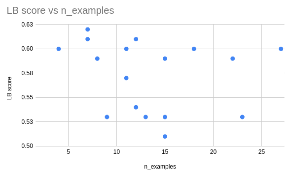

Iteration 6. Few shot prompt engineering
01-04-2024
Goal
Try different examples for few shot prompt. Can I learn more about the style of the prompts used on the test set?
Motivation
I already know how to do few-shot prompting and fine-tuning of Mixtral. I have the tools to solve the challenge but I don't know which data I have to use with those tools.
I need to gather more information about the test set.
Development
Sorting inferences by similarity
To be able to use all the public datasets for few shot prompting I have to first sort the prompts. My initial idea was to use a set of prompts as diverse as possible, which is equivalent to minimizing the similarity between a set of prompts.
I have created a notebook that:
- Samples n prompts from a dataset
- Computes T5 embeddings from the prompts
- Finds the center of the embeddings and chooses the center as the start point
- Iteratively adds new prompts by choosing the less similar prompt to the already selected
Results
Public mean prompts
Let's see what can we learn from the public mean prompts.
https://www.kaggle.com/competitions/llm-prompt-recovery/discussion/488150
Some of the prompts are really long. The first one is 78 tokens according to OpenAI. Maybe that is one way of decreasing the uncertainty on the predictions. I could rephrase the prompt in different ways, give different levels of details of the prompt...
Examples from public datasets
I have tried submitting examples from different public datasets. I also tried using a different number of examples for few shot prompting.
| dataset | input tokens | n_examples | LB score |
|---|---|---|---|
| alexxxsem_gemma | 3000 | 12 | 0.54 |
| alexxxsem_gemini | 4000 | 15 | 0.53 |
| alexxxsem_gemma | 4000 | 15 | 0.51 |
| dipamc77 | 4000 | 15 | 0.59 |
| gali1eo | 4000 | 8 | 0.59 |
| gemma_suppl_rewrite | 4000 | 13 | 0.53 |
| mooney_leaked_gpt4_labelled | 4000 | 18 | 0.60 |
| nbroad-v1 | 4000 | 2 | |
| nbroad-v2 | 4000 | 2 | |
| newtonbaba_gemini | 4000 | 11 | 0.57 |
| newtonbaba_gemma | 4000 | 7 | 0.62 |
| thedrcat_gemma100 | 4000 | 10 | |
| thedrcat_gemma1000 | 4000 | 9 | 0.53 |
| winddude | 4000 | 4 | 0.60 |
| alexxxsem_gemma | 6000 | 23 | 0.53 |
| dipamc77 | 6000 | 22 | 0.59 |
| gali1eo | 6000 | 12 | 0.61 |
| mooney_leaked_gpt4_labelled | 6000 | 27 | 0.60 |
| newtonbaba_gemma | 6000 | 11 | 0.60 |
| winddude | 6000 | 7 | 0.61 |

- The number of examples does not correlate with LB score, adding more examples from the same domain does not result in higher scores
- The higher LB score is obtained with just 7 examples, while we have submissions with 27 examples that score lower
- Thus it does not seem to be a problem related to the number of examples, but to the style or quality of them
- There is a great variability in LB score: from 0.51 to 0.62
- How is it possible that most of the evaluations are below the simple baseline of
Improve the text to this.
Analysis of the prompts by GPT4
GPT4 says that the most diverse prompts are from Newtonbaba, but it is not sure about the other datasets. From my point of view I don't see a clear pattern or differences between the prompts.
- https://chat.openai.com/c/e92c50d3-079a-42ba-b844-a438d2a3531d
- https://chat.openai.com/c/ee12f003-7485-4ba8-b684-b2094ffa4a96
Understanding the effect of sharpening the similarity
https://www.kaggle.com/code/ironbar/understanding-the-effect-of-sharpening
- The sharpened cosine similarity score is not penalizing scores with high variance. If a model scores lower than other model is simply because the predicted similarity is lower.
- In fact the effect is the opposite. The most extreme example I can think is this:
- A similarity distribution of
[0.5, 0.5]will have a mean sharpened score of0.125 == 0.5**3 - A similarity distribution of
[1, 0]has the same mean as the previous distribution but the mean sharped score is0.5
So the metric is favouring very good guesses.
If Improve the text to this. is scoring 0.60 and a naive Mixtral model scores 0.52 is simply because the first one is getting a higher similarity with the test set prompts, not because Mixtral predictions have greater variance.
Playing with T5 embeddings
https://www.kaggle.com/code/ironbar/t5-travesty-when-good-prompts-score-bad
- Despite trying it hard I do not get scores below
0.60. If the predictions capture the intent of the prompt I should be getting scores above0.7easily. - On my examples
Improve the text to this.scores below0.60, sometimes as worse as0.38 - One way to fight uncertainty might be to mix generic and specific prompts in the same answer.
- Comparing the prompt against similar sentences generated by GPT4 returned scores above
0.70
Prompt variations
Creating prompt variations was a difficult task. Distilling all the changes into a prompt is not an easy task.
| experiment | LB score |
|---|---|
| baseline | 0.60 |
| always use "text" | 0.60 |
| improve the text | 0.60 |
| shorter prompts | 0.61 |
| abstract prompt | 0.61 |
| specific prompts | 0.6 |
| gemini_synonym_prompt | 0.6 |
| gpt3.5_synonym_prompt | 0.57 |
| specific + abstract | 0.61 |
I have tried many prompt variations and the LB score barely changed. It thus seems that the prompt style is not important, but to capture the intent of the ground truth prompt.
Forking public Mistral notebook
A public notebook was published
that used Mistral 7B and few-shot prompting and achieved a LB score of 0.62.
I thought that replacing Mistral by Mixtral will result in improvements but that was not the case. The score was exactly the same. That is weird because in the benchmarks Mixtral is much better.
Conclusion
There are many learnings from this iteration:
- It seems that the style of the prompts is not important.
- The number of examples in few-shot prompting is not correlated with LB score
- Changing the examples in few-shot prompting can have a big effect on LB score
Next steps
TODO
- What if I choose a set of samples, and rewrite the prompts with different styles and make submissions? More abstract, more generic, longer or shorter, text or story...